世界政区索引
按英文字母排序的列表
A
| 国家或地区 | 中文全称 | 英文简称 | ISO代码 |
|---|---|---|---|
| 阿布哈兹 | 阿布哈兹共和国 | Abkhazia | 无 |
| 阿富汗 | 阿富汗伊斯兰共和国 | Afghanistan | AF-AFG-004 |
| 阿尔巴尼亚 | 阿尔巴尼亚共和国 | Albania | AL-ALB-008 |
| 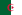 阿尔及利亚 | 阿尔及利亚民主人民共和国 | Algeria | DZ-DZA-012 |
| 安道尔 | 安道尔公国 | Andorra | AD-AND-020 |
| 安哥拉 | 安哥拉共和国 | Angola | AO-AGO-024 |
| 安提瓜和巴布达 | 安提瓜和巴布达 | Antigua and Barbuda | AG-ATG-028 |
| 阿根廷 | 阿根廷共和国 | Argentina | AR-ARG-032 |
| 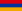 亚美尼亚 | 亚美尼亚共和国 | Armenia | AM-ARM-051 |
| 阿尔扎赫 | 阿尔扎赫共和国 | Artsakh | 无 |
| 澳大利亚 | 澳大利亚联邦 | Australia | AU-AUS-036 |
| 奥地利 | 奥地利共和国 | Austria | AT-AUT-040 |
| 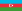 阿塞拜疆 | 阿塞拜疆共和国 | Azerbaijan | AZ-AZE-031 |
B
| 国家或地区 | 中文全称 | 英文简称 | ISO代码 |
|---|---|---|---|
| 巴哈马 | 巴哈马国 | Bahamas | BS-BHS-044 |
| 巴林 | 巴林王国 | Bahrain | BH-BHR-048 |
| 孟加拉国 | 孟加拉人民共和国 | Bangladesh | BD-BGD-050 |
| 巴巴多斯 | 巴巴多斯 | Barbados | BB-BRB-052 |
| 白俄罗斯 | 白俄罗斯共和国 | Belarus | BY-BLR-112 |
| 比利时 | 比利时王国 | Belgium | BE-BEL-056 |
| 伯利兹 | 伯利兹 | Belize | BZ-BLZ-084 |
| 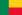 贝宁 | 贝宁共和国 | Benin | BJ-BEN-204 |
| 不丹 | 不丹王国 | Bhutan | BT-BTN-064 |
| 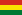 玻利维亚 | 多民族玻利维亚国 | Bolivia | BO-BOL-068 |
| 波斯尼亚和黑塞哥维那 | 波斯尼亚和黑塞哥维那 | Bosnia and Herzegovina | BA-BIH-070 |
| 博茨瓦纳 | 博茨瓦纳共和国 | Botswana | BW-BWA-072 |
| 巴西 | 巴西联邦共和国 | Brazil | BR-BRA-076 |
| 文莱 | 文莱达鲁萨兰国 | Brunei | BN-BRN-096 |
| 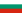 保加利亚 | 保加利亚共和国 | Bulgaria | BG-BGR-100 |
| 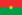 布基纳法索 | 布基纳法索 | Burkina Faso | BF-BFA-854 |
| 布隆迪 | 布隆迪共和国 | Burundi | BI-BDI-108 |
C
| 国家或地区 | 中文全称 | 英文简称 | ISO代码 |
|---|---|---|---|
| 柬埔寨 | 柬埔寨王国 | Cambodia | KH-KHM-116 |
| 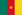 喀麦隆 | 喀麦隆共和国 | Cameroon | CM-CMR-120 |
| 加拿大 | 加拿大 | Canada | CA-CAN-124 |
| 佛得角 | 佛得角共和国 | Cape Verde | CV-CPV-132 |
| 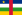 中非 | 中非共和国 | Central African Republic | CF-CAF-140 |
| 乍得 | 乍得共和国 | Chad | TD-TCD-148 |
| 智利 | 智利共和国 | Chile | CL-CHL-152 |
| 中华人民共和国 | China | CN-CHN-156 | |
| 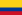 哥伦比亚 | 哥伦比亚共和国 | Colombia | CO-COL-170 |
| 科摩罗 | 科摩罗联盟 | Comoros | KM-COM-174 |
| 刚果共和国 | Congo (Brazzaville) | CG-COG-178 | |
| 刚果（金） | 刚果民主共和国 | Congo (Kinshasa) | CD-COD-180 |
| 库克群岛（新西兰） | 库克群岛 | Cook Islands | CK-COK-184 |
| 哥斯达黎加 | 哥斯达黎加共和国 | Costa Rica | CR-CRI-188 |
| 科特迪瓦共和国 | Côte d'Ivoire | CI-CIV-384 | |
| 克罗地亚 | 克罗地亚共和国 | Croatia | HR-HRV-191 |
| 古巴 | 古巴共和国 | Cuba | CU-CUB-192 |
| 塞浦路斯 | 塞浦路斯共和国 | Cyprus | CY-CYP-196 |
| 捷克 | 捷克共和国 | Czech Republic | CZ-CZE-203 |
D
| 国家或地区 | 中文全称 | 英文简称 | ISO代码 |
|---|---|---|---|
| 丹麦 | 丹麦王国 | Denmark | DK-DNK-208 |
| 吉布提 | 吉布提共和国 | Djibouti | DJ-DJI-262 |
| 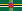 多米尼克 | 多米尼克国 | Dominica | DM-DMA-212 |
| 多米尼加 | 多米尼加共和国 | Dominican Republic | DO-DOM-214 |
| 顿涅茨克人民共和国 | Donetsk |
E
| 国家或地区 | 中文全称 | 英文简称 | ISO代码 |
|---|---|---|---|
| 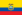 厄瓜多尔 | 厄瓜多尔共和国 | Ecuador | EC-ECU-218 |
| 埃及 | 阿拉伯埃及共和国 | Egypt | EG-EGY-818 |
| 萨尔瓦多 | 萨尔瓦多共和国 | El Salvador | SV-SLV-222 |
| 赤道几内亚 | 赤道几内亚共和国 | Equatorial Guinea | GQ-GNQ-226 |
| 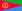 厄立特里亚 | 厄立特里亚国 | Eritrea | ER-ERI-232 |
| 爱沙尼亚 | 爱沙尼亚共和国 | Estonia | EE-EST-233 |
| 斯威士兰 | 斯威士兰王国 | Eswatini | SZ-SWZ-748 |
| 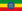 埃塞俄比亚 | 埃塞俄比亚联邦民主共和国 | Ethiopia | ET-ETH-231 |
F
| 国家或地区 | 中文全称 | 英文简称 | ISO代码 |
|---|---|---|---|
| 斐济 | 斐济共和国 | Fiji | FJ-FJI-242 |
| 芬兰 | 芬兰共和国 | Finland | FI-FIN-246 |
| 法兰西共和国 | France | FR-FRA-250 |
G
| 国家或地区 | 中文全称 | 英文简称 | ISO代码 |
|---|---|---|---|
| 加蓬 | 加蓬共和国 | Gabon | GA-GAB-266 |
| 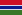 冈比亚 | 冈比亚共和国 | Gambia | GM-GMB-270 |
| 格鲁吉亚 | 格鲁吉亚 | Georgia | GE-GEO-268 |
| 德国 | 德意志联邦共和国 | Germany | DE-DEU-276 |
| 加纳 | 迦纳共和国 | Ghana | GH-GHA-288 |
| 希腊 | 希腊共和国 | Greece | GR-GRC-300 |
| 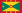 格林纳达 | 格林纳达 | Grenada | GD-GRD-308 |
| 危地马拉 | 危地马拉共和国 | Guatemala | GT-GTM-320 |
| 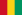 几内亚 | 几内亚共和国 | Guinea | GN-GIN-324 |
| 几内亚比绍 | 几内亚比绍共和国 | Guinea-Bissau | GW-GNB-624 |
| 圭亚那 | 圭亚那合作共和国 | Guyana | GY-GUY-328 |
H
| 国家或地区 | 中文全称 | 英文简称 | ISO代码 |
|---|---|---|---|
| 海地 | 海地共和国 | Haiti | HT-HTI-332 |
| 洪都拉斯 | 洪都拉斯共和国 | Honduras | HN-HND-340 |
| 匈牙利 | 匈牙利 | Hungary | HU-HUN-348 |
I
| 国家或地区 | 中文全称 | 英文简称 | ISO代码 |
|---|---|---|---|
| 冰岛 | 冰岛共和国 | Iceland | IS-ISL-352 |
| 印度 | 印度共和国 | India | IN-IND-356 |
| 印尼 | 印度尼西亚共和国 | Indonesia | ID-IDN-360 |
| 伊朗 | 伊朗伊斯兰共和国 | Iran | IR-IRN-364 |
| 伊拉克 | 伊拉克共和国 | Iraq | IQ-IRQ-368 |
| 爱尔兰 | 爱尔兰 | Ireland | IE-IRL-372 |
| 以色列 | 以色列国 | Israel | IL-ISR-376 |
| 意大利共和国 | Italy | IT-ITA-380 |
J
| 国家或地区 | 中文全称 | 英文简称 | ISO代码 |
|---|---|---|---|
| 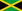 牙买加 | 牙买加 | Jamaica | JM-JAM-388 |
| 日本国 | Japan | JP-JPN-392 | |
| 约旦 | 约旦哈希姆王国 | Jordan | JO-JOR-400 |
K
| 国家或地区 | 中文全称 | 英文简称 | ISO代码 |
|---|---|---|---|
| 哈萨克斯坦 | 哈萨克斯坦共和国 | Kazakhstan | KZ-KAZ-398 |
| 肯尼亚 | 肯尼亚共和国 | Kenya | KE-KEN-404 |
| 基里巴斯 | 基里巴斯共和国 | Kiribati | KI-KIR-296 |
| 科索沃 | 科索沃共和国 | Kosovo | |
| 科威特 | 科威特国 | Kuwait | KW-KWT-414 |
| 吉尔吉斯斯坦 | 吉尔吉斯共和国 | Kyrgyzstan | KG-KGZ-417 |
L
| 国家或地区 | 中文全称 | 英文简称 | ISO代码 |
|---|---|---|---|
| 老挝人民民主共和国 | Laos | LA-LAO-418 | |
| 拉脱维亚 | 拉脱维亚共和国 | Latvia | LV-LVA-428 |
| 黎巴嫩 | 黎巴嫩共和国 | Lebanon | LB-LBN-422 |
| 莱索托 | 莱索托王国 | Lesotho | LS-LSO-426 |
| 利比里亚 | 利比里亚共和国 | Liberia | LR-LBR-430 |
| 利比亚 | 利比亚国 | Libya | LY-LBY-434 |
| 列支敦士登 | 列支敦士登公国 | Liechtenstein | LI-LIE-438 |
| 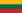 立陶宛 | 立陶宛共和国 | Lithuania | LT-LTU-440 |
| 卢甘斯克人民共和国 | Luhansk | ||
| 卢森堡 | 卢森堡大公国 | Luxembourg | LU-LUX-442 |
M
| 国家或地区 | 中文全称 | 英文简称 | ISO代码 |
|---|---|---|---|
| 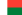 马达加斯加 | 马达加斯加共和国 | Madagascar | MG-MDG-450 |
| 马拉维 | 马拉维共和国 | Malawi | MW-MWI-454 |
| 马来西亚 | 马来西亚联邦 | Malaysia | MY-MYS-458 |
| 马尔代夫 | 马尔代夫共和国 | Maldives | MV-MDV-462 |
| 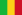 马里 | 马里共和国 | Mali | ML-MLI-466 |
| 马耳他 | 马耳他共和国 | Malta | MT-MLT-470 |
| 马绍尔群岛 | 马绍尔群岛共和国 | Marshall Islands | MH-MHL-584 |
| 毛里塔尼亚 | 毛里塔尼亚伊斯兰共和国 | Mauritania | MR-MRT-478 |
| 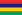 毛里求斯 | 毛里求斯共和国 | Mauritius | MU-MUS-480 |
| 墨西哥 | 墨西哥合众国 | Mexico | MX-MEX-484 |
| 密克罗尼西亚联邦 | 密克罗尼西亚联邦 | Micronesia | FM-FSM-583 |
| 摩尔多瓦 | 摩尔多瓦共和国 | Moldova | MD-MDA-498 |
| 摩纳哥 | 摩纳哥公国 | Monaco | MC-MCO-492 |
| 蒙古国 | 蒙古国 | Mongolia | MN-MNG-496 |
| 黑山 | 黑山 | Montenegro | ME-MNE-499 |
| 摩洛哥 | 摩洛哥王国 | Morocco | MA-MAR-504 |
| 莫桑比克 | 莫桑比克共和国 | Mozambique | MZ-MOZ-508 |
| 缅甸 | 缅甸联邦共和国 | Myanmar | MM-MMR-104 |
{kind=link}
{kind=link}
N
| 国家或地区 | 中文全称 | 英文简称 | ISO代码 |
|---|---|---|---|
| 纳米比亚 | 纳米比亚共和国 | Namibia | NA-NAM-516 |
| 瑙鲁 | 瑙鲁共和国 | Nauru | NR-NRU-520 |
| 尼泊尔 | 尼泊尔联邦民主共和国 | Nepal | NP-NPL-524 |
| 荷兰 | 荷兰王国 | Netherlands | NL-NLD-528 |
| 新西兰 | 新西兰 | New Zealand | NZ-NZL-554 |
| 尼加拉瓜 | 尼加拉瓜共和国 | Nicaragua | NI-NIC-558 |
| 尼日尔共和国 | Niger | NE-NER-562 | |
| 尼日利亚 | 尼日利亚联邦共和国 | Nigeria | NG-NGA-566 |
| 纽埃（新西兰） | 纽埃 | Niue | NU-NIU-570 |
| 朝鲜 | 朝鲜民主主义人民共和国 | North Korea | KP-PRK-408 |
| 北塞浦路斯 | 北塞浦路斯土耳其共和国 | Northern Cyprus | |
| 北马其顿 | 北马其顿共和国[3] [4] | North Macedonia | MK-MKD-807 |
| 挪威 | 挪威王国 | Norway | NO-NOR-578 |
O
| 国家或地区 | 中文全称 | 英文简称 | ISO代码 |
|---|---|---|---|
| 阿曼 | 阿曼苏丹国 | Oman | OM-OMN-512 |
P
| 国家或地区 | 中文全称 | 英文简称 | ISO代码 |
|---|---|---|---|
| 巴基斯坦 | 巴基斯坦伊斯兰共和国 | Pakistan | PK-PAK-586 |
| 帕劳 | 帕劳共和国 | Palau | PW-PLW-585 |
| 巴勒斯坦 | 巴勒斯坦国 | Palestine | PS-PSE-275 |
| 巴拿马 | 巴拿马共和国 | Panama | PA-PAN-591 |
| 巴布亚新几内亚 | 巴布亚新几内亚独立国 | Papua New Guinea | PG-PNG-598 |
| 巴拉圭 | 巴拉圭共和国 | Paraguay | PY-PRY-600 |
| 秘鲁 | 秘鲁共和国 | Peru | PE-PER-604 |
| 菲律宾 | 菲律宾共和国 | Philippines | PH-PHL-608 |
| 波兰 | 波兰共和国 | Poland | PL-POL-616 |
| 葡萄牙 | 葡萄牙共和国 | Portugal | PT-PRT-620 |
| 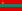 德涅斯特河沿岸 | 德涅斯特河沿岸摩尔达维亚共和国 | Pridnestrovie |
Q
| 国家或地区 | 中文全称 | 英文简称 | ISO代码 |
|---|---|---|---|
| 卡塔尔 | 卡塔尔国 | Qatar | QA-QAT-634 |
R
| 国家或地区 | 中文全称 | 英文简称 | ISO代码 |
|---|---|---|---|
| 罗马尼亚 | 罗马尼亚 | Romania | RO-ROU-642 |
| 俄罗斯 | 俄罗斯联邦 | Russia | RU-RUS-643 |
| 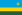 卢旺达 | 卢旺达共和国 | Rwanda | RW-RWA-646 |
S
| 国家或地区 | 中文全称 | 英文简称 | ISO代码 |
|---|---|---|---|
| 圣基茨和尼维斯 | 圣基茨和尼维斯联邦 | Saint Christopher and Nevis | KN-KNA-659 |
| 圣卢西亚 | 圣卢西亚 | Saint Lucia | LC-LCA-662 |
| 圣文森特和格林纳丁斯 | 圣文森特和格林纳丁斯 | Saint Vincent and the Grenadines | VC-VCT-670 |
| 萨摩亚 | 萨摩亚独立国 | Samoa | WS-WSM-882 |
| 圣马力诺 | 圣马力诺共和国 | San Marino | SM-SMR-674 |
| 圣多美和普林西比 | 圣多美和普林西比民主共和国 | São Tomé and Príncipe | ST-STP-678 |
| 沙特阿拉伯 | 沙特阿拉伯王国 | Saudi Arabia | SA-SAU-682 |
| 塞内加尔 | 塞内加尔共和国 | Senegal | SN-SEN-686 |
| 塞尔维亚 | 塞尔维亚共和国 | Serbia | RS-SRB-688 |
| 塞舌尔 | 塞舌尔共和国 | Seychelles | SC-SYC-690 |
| 塞拉利昂 | 塞拉利昂共和国 | Sierra Leone | SL-SLE-694 |
| 新加坡 | 新加坡共和国 | Singapore | SG-SGP-702 |
| 斯洛伐克 | 斯洛伐克共和国 | Slovakia | SK-SVK-703 |
| 斯洛文尼亚 | 斯洛文尼亚共和国 | Slovenia | SI-SVN-705 |
| 所罗门群岛 | 所罗门群岛 | Solomon Islands | SB-SLB-090 |
| 索马里 | 索马里联邦共和国 | Somali | SO-SOM-706 |
| 索马里兰 | 索马里兰共和国 | Somaliland | |
| 南非 | 南非共和国 | South Africa | ZA-ZAF-710 |
| 韩国 | 大韩民国 | South Korea | KR-KOR-410 |
| 南奥塞梯 | 南奥塞梯共和国 | South Ossetia | |
| 南苏丹 | 南苏丹共和国 | South Sudan | SS-SSD-728 |
| 西班牙王国 | Spain | ES-ESP-724 | |
| 斯里兰卡 | 斯里兰卡民主社会主义共和国 | Sri Lanka | LK-LKA-144 |
| 苏丹 | 苏丹共和国 | Sudan | SD-SDN-729 |
| 苏里南 | 苏里南共和国 | Suriname | SR-SUR-740 |
| 瑞典 | 瑞典王国 | Sweden | SE-SWE-752 |
| 瑞士 | 瑞士联邦 | Switzerland | CH-CHE-756 |
| 叙利亚 | 阿拉伯叙利亚共和国 | Syria | SY-SYR-760 |
T
| 国家或地区 | 中文全称 | 英文简称 | ISO代码 |
|---|---|---|---|
| 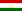 塔吉克斯坦 | 塔吉克斯坦共和国 | Tajikistan | TJ-TJK-762 |
| 坦桑尼亚 | 坦桑尼亚联合共和国 | Tanzania | TZ-TZA-834 |
| 泰国 | 泰王国 | Thailand | TH-THA-764 |
| 东帝汶 | 东帝汶民主共和国 | Timor-Leste | TL-TLS-626 |
| 多哥 | 多哥共和国 | Togo | TG-TGO-768 |
| 汤加 | 汤加王国 | Tonga | TO-TON-776 |
| 特立尼达和多巴哥 | 特立尼达和多巴哥共和国 | Trinidad and Tobago | TT-TTO-780 |
| 突尼斯 | 突尼斯共和国 | Tunisia | TN-TUN-788 |
| 土耳其 | 土耳其共和国 | Turkey | TR-TUR-792 |
| 土库曼斯坦 | 土库曼斯坦 | Turkmenistan | TM-TKM-795 |
| 图瓦卢 | 图瓦卢 | Tuvalu | TV-TUV-798 |
U
| 国家或地区 | 中文全称 | 英文简称 | ISO代码 |
|---|---|---|---|
| 乌干达 | 乌干达共和国 | Uganda | UG-UGA-800 |
| 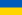 乌克兰 | 乌克兰 | Ukraine | UA-UKR-804 |
| 阿联酋 | 阿拉伯联合酋长国 | United Arab Emirates | AE-ARE-784 |
| 英国 | 大不列颠及北爱尔兰联合王国 | United Kingdom | GB-GBR-826 |
| 美国 | 美利坚合众国 | United States | US-USA-840 |
| 乌拉圭 | 乌拉圭东岸共和国 | Uruguay | UY-URY-858 |
| 乌兹别克斯坦共和国 | Uzbekistan | UZ-UZB-860 |
V
| 国家或地区 | 中文全称 | 英文简称 | ISO代码 |
|---|---|---|---|
| 瓦努阿图 | 瓦努阿图共和国 | Vanuatu | VU-VUT-548 |
| 梵蒂冈 | 梵蒂冈城国 | The Holy See（Vatican City） | VA-VAT-336 |
| 委内瑞拉 | 委内瑞拉玻利瓦尔共和国 | Venezuela | VE-VEN-862 |
| 越南 | 越南社会主义共和国 | Vietnam | VN-VNM-704 |
W
| 国家或地区 | 中文全称 | 英文简称 | ISO代码 |
|---|---|---|---|
| 西撒哈拉 | 阿拉伯撒哈拉民主共和国 | Western Sahara | EH-ESH-732 |
Y
| 国家或地区 | 中文全称 | 英文简称 | ISO代码 |
|---|---|---|---|
| 也门 | 也门共和国 | Yemen | YE-YEM-887 |
Z
| 国家或地区 | 中文全称 | 英文简称 | ISO代码 |
|---|---|---|---|
| 赞比亚 | 赞比亚共和国 | Zambia | ZM-ZMB-894 |
| 津巴布韦 | 津巴布韦共和国 | Zimbabwe | ZW-ZWE-716 |